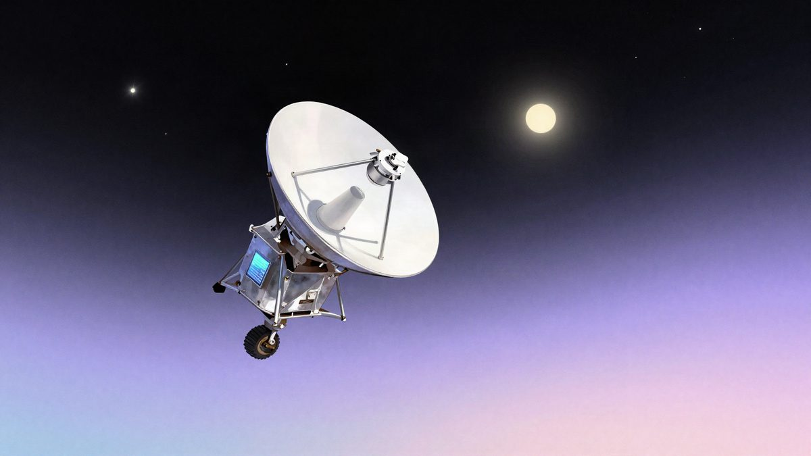

Voyager 1 prestao slati znanstvene podatke, NASA pokušava oživjeti sondu udaljenu oko 26 milijardi km

Voyager 1 od 14. studenoga ne šalje znanstvene podatke prema Zemlji, a CNN piše da je uzrok kvar na računalu letjelice. NASA pokušava vratiti sondu u normalan rad, no uzrok još nije potvrđen, a svaki odgovor stiže nakon oko dva dana.
Voyager 1 više ne šalje znanstvene podatke na Zemlju. CNN piše da je uzrok kvar na računalu letjelice, a NASA je problem otkrila 14. studenoga. Od tada sonda odašilje samo noseći radiosignal, koji potvrđuje da je veza uspostavljena, ali ne sadrži korisne informacije.
Kvar je navodno zahvatio računalo zaduženo za prikupljanje i obradu podataka sa znanstvenih instrumenata. Točan uzrok još nije potvrđen.
Dva instrumenta od deset
Da uštedi energiju, letjelica trenutačno koristi samo dva od deset instrumenata. Stručnjaci NASA-e već pokušavaju vratiti sondu u normalan rad. Postupak je spor, jer signal mora prijeći golem put do sonde i natrag, pa čekanje odgovora može trajati oko dva dana.
Voyager 1 je od Zemlje udaljen oko 26 milijardi kilometara. Prvi je objekt koji je napravio čovjek i koji se udaljio na jedan svjetlosni dan, a to je oko 25,9 milijardi kilometara.
Sonda iz 1977.
Voyager 1 je lansiran u rujnu 1977. radi istraživanja vanjskih planeta Sunčeva sustava i međuzvjezdanog prostora.
Nije poznato hoće li NASA uspjeti ponovno uspostaviti slanje znanstvenih podataka ni koliko bi to moglo trajati. Svaki pokušaj komunikacije sa sondom traje danima, pa se problem rješava sporo.
Izvor: iXBT